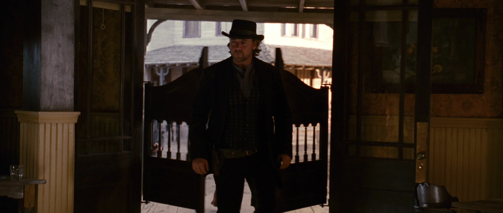
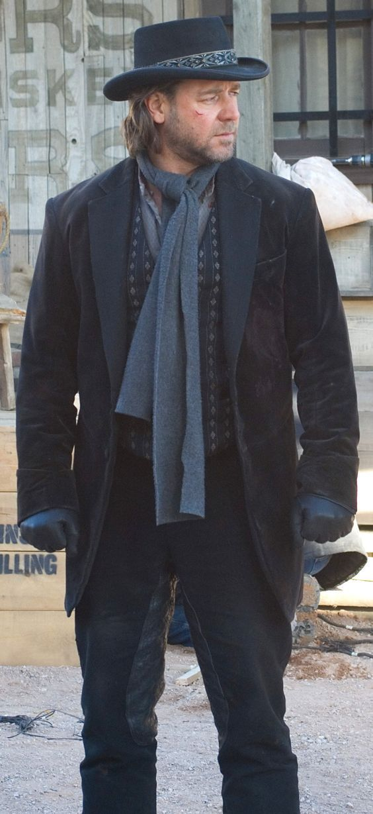
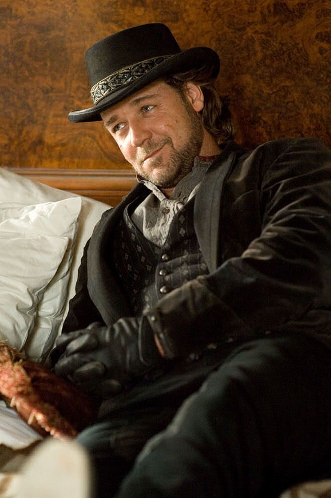

Wanted
Ben Wade
Dead or Alive
"Even bad men love their mamas."

The Man & The Myth
I ain't a complicated man, though the Southern Pacific Railroad might tell you otherwise. I run a crew of capable boys, we take what's ours, and we don't leave much behind.
When I'm not relieving stagecoaches of their heavy burdens, I find peace in quiet observation. The world is full of interesting faces, and a good piece of charcoal is sometimes louder than a Colt .45.

Professional Expertise
Skills of Capture
- Precision Timing
- Territory Knowledge
- Gang Leadership
- Fast Draw
The Hand of God
My preferred tool of negotiation. A customized Colt Single Action Army with a silver crucifix inlaid in the black grip. Fast on the draw, accurate at a distance, and carries the weight of divine judgment.
Leadership requires a firm hand and absolute loyalty. We specialize in high-risk, high-reward acquisitions, particularly involving armored stagecoaches and payroll trains.
A Moment's Peace
"It's a long way back to Bisbee."
